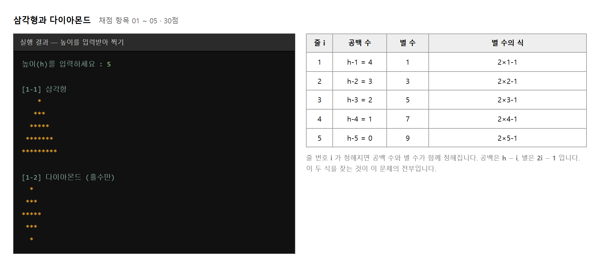
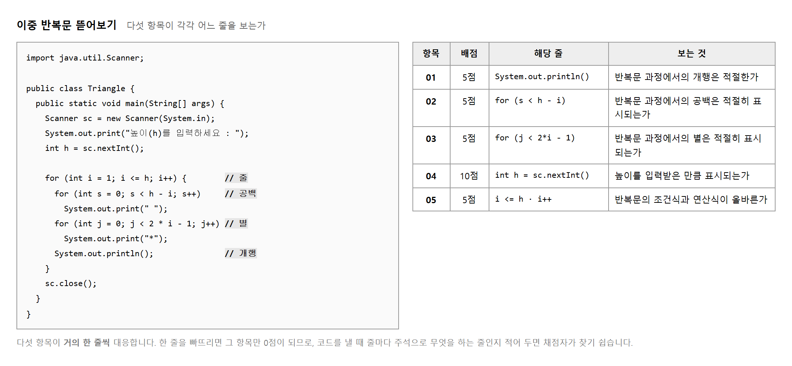
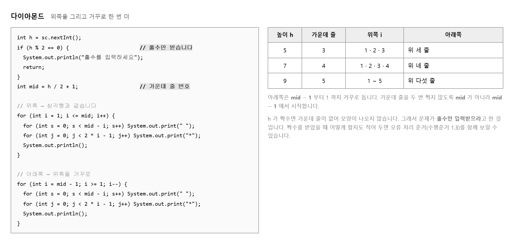
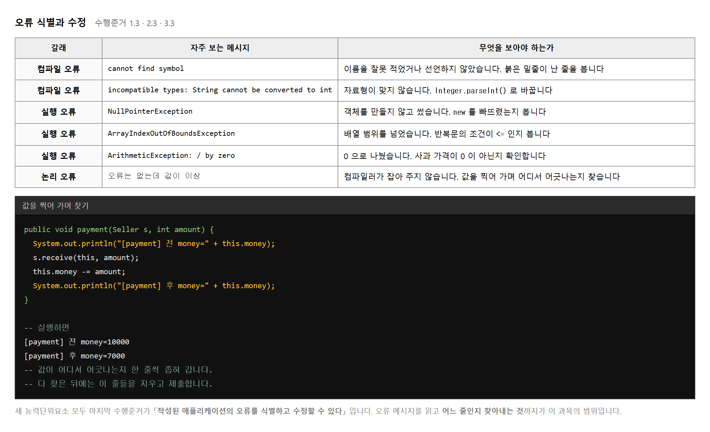
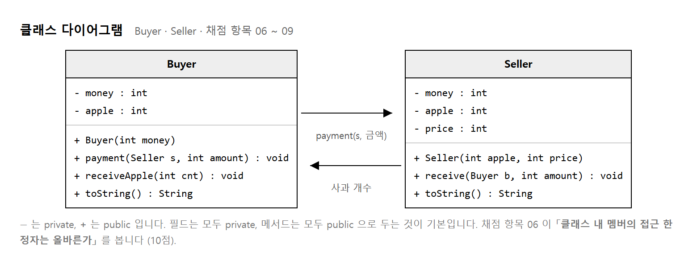
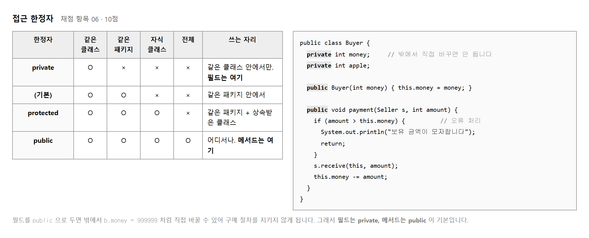
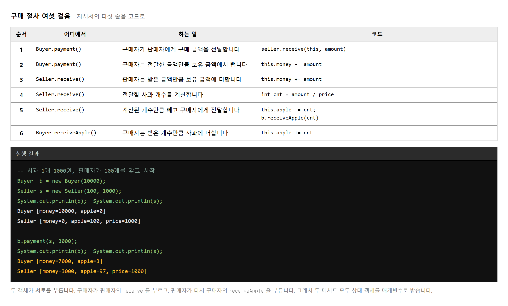
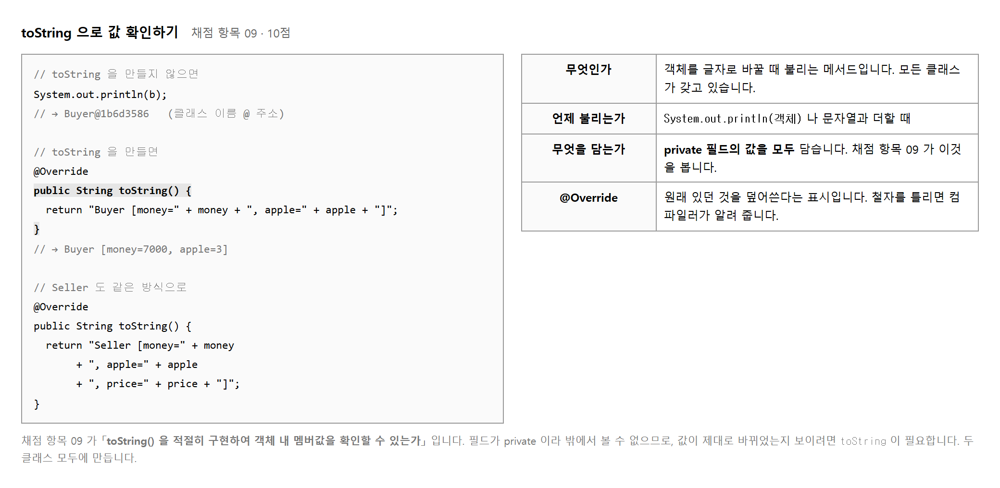
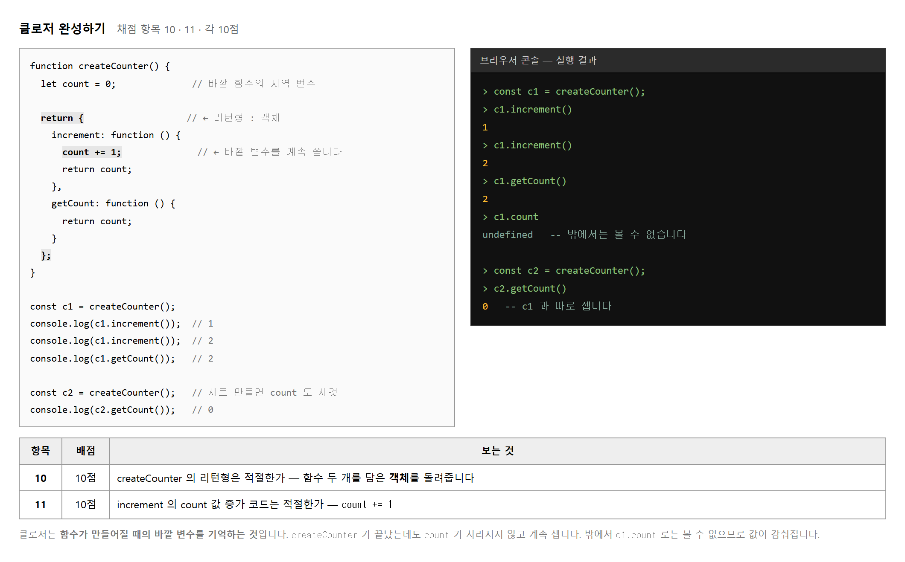
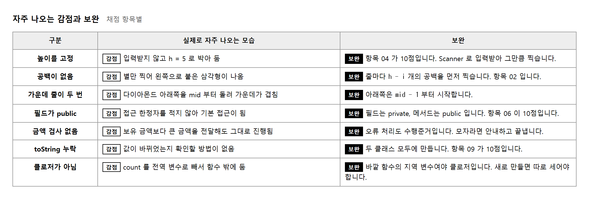

능력단위 프로그래밍 언어 활용 (2001020231_23v5) / 2수준 · 평가방법 문제 해결 시나리오 (100점)
문제가 셋이고, 세 능력단위요소에 하나씩 대응합니다. 각 항목에 대한 코드와 결과물을 PPT 로 정리해 제출합니다. 코드만 내거나 결과만 내면 채점자가 「적절히 구현하였는가」 를 판정할 수 없습니다.
| 문제 | 능력단위요소 | 무엇을 만드는가 | 배점 |
|---|---|---|---|
| 1 | 구조적 프로그래밍 언어 활용하기 | 높이를 입력받아 삼각형 · 다이아몬드 찍기 | 30 |
| 2 | 객체지향 프로그래밍 언어 활용하기 | Buyer · Seller 클래스로 구매 절차 구현 | 50 |
| 3 | 스크립트 언어 활용하기 | 클로저 완성하기 | 20 |
세 요소의 수행준거가 모두 「설계서 확인 → 작성 → 오류 식별과 수정」 세 단계로 같은 모양입니다. 언어만 바뀌고 하는 일은 같습니다.
h−i, 별 2i−1)만 찾으면 끝나는 문제입니다.
프로그램을 짜는 방식에는 갈래가 있습니다. 이 능력단위는 그 갈래를 셋으로 나누어 다룹니다. 같은 언어로도 세 방식이 다 되지만, 무엇을 중심에 두느냐가 다릅니다.
| 갈래 | 무엇을 중심에 두는가 | 이 평가에서 |
|---|---|---|
| 구조적 | 절차 — 순서 · 조건 · 반복 | 반복문으로 모양 찍기 (Java) |
| 객체지향 | 객체 — 값과 동작을 한 덩어리로 | Buyer · Seller 가 서로를 부르기 (Java) |
| 스크립트 | 함수 — 값처럼 주고받는 함수 | 함수가 바깥 변수를 기억하기 (JavaScript) |
| 단계 | 수행준거 | 이 평가에서 |
|---|---|---|
| 1 | 프로그램 설계서를 확인할 수 있다 | 문제 글과 클래스 다이어그램을 읽는 일 |
| 2 | 언어를 활용하여 애플리케이션을 작성할 수 있다 | 코드를 짜는 일 — 채점 항목의 대부분 |
| 3 | 작성된 애플리케이션의 오류를 식별하고 수정할 수 있다 | 돌려 보고 고치는 일 |
3단계가 따로 채점되지는 않지만, 돌아가지 않는 코드는 2단계도 인정받기 어렵습니다. 반드시 실행해 보고 결과 화면과 함께 내십시오.
네 단계로 나누었습니다. 배점에 맞춰 시간을 배분하십시오. 문제 1은 식 두 개를 찾으면 끝나고, 문제 2가 가장 오래 걸립니다.
문제 3의 클로저는 자바스크립트 입니다. Eclipse 가 아니라 브라우저의 개발자 도구 콘솔(F12)에서 실행해 보는 것이 빠릅니다.
문제 하나에 두 쪽이 기본입니다. 코드 한 쪽, 실행 결과 한 쪽 입니다.
| 쪽 | 내용 | 채점 항목 |
|---|---|---|
| 1 | 표지 | — |
| 2 · 3 | 문제 1 삼각형 — 코드 / 결과 | 01 ~ 05 |
| 4 · 5 | 문제 1 다이아몬드 — 코드 / 결과 | 01 ~ 05 |
| 6 · 7 | 문제 2 Buyer · Seller — 코드 | 06 ~ 09 |
| 8 | 문제 2 실행 결과 (toString 출력) | 09 |
| 9 · 10 | 문제 3 클로저 — 코드 / 콘솔 결과 | 10 · 11 |
편집기 화면을 캡처하면 글자가 작아 읽기 어렵습니다. 코드를 복사해 텍스트로 붙이고 고정폭 글꼴(Consolas · D2Coding)을 지정하십시오. 들여쓰기가 살아 있어야 반복문의 구조가 보입니다.
// [항목 02] 공백 출력 처럼 적으면 채점자가 그 줄을 바로 찾습니다.
다섯 항목이 거의 한 줄씩 대응하는 문제라 효과가 큽니다.
목적 — 코드를 짜기 전에 PPT 열 쪽을 빈 채로 만들어 둡니다. 빈 쪽이 남아 있으면 무엇을 안 했는지가 눈에 보입니다.
내용은 나중입니다. 제목만 적어 둡니다.
| 쪽 | 제목에 적을 말 | 채운 뒤 지울 메모 |
|---|---|---|
| 1 | 프로그래밍 언어 활용 — 홍길동 | 표지 |
| 2 | 문제 1 삼각형 — 코드 | 실습 2-3 에서 |
| 3 | 문제 1 삼각형 — 실행 결과 | 실습 2-3 에서 |
| 4 | 문제 1 다이아몬드 — 코드 | 실습 2-4 에서 |
| 5 | 문제 1 다이아몬드 — 실행 결과 | 실습 2-4 에서 |
| 6 | 문제 2 Buyer — 코드 | 실습 2-7 · 2-8 |
| 7 | 문제 2 Seller — 코드 | 실습 2-9 |
| 8 | 문제 2 실행 결과 | 실습 2-10 |
| 9 | 문제 3 클로저 — 코드 | 실습 2-13 |
| 10 | 문제 3 콘솔 결과 | 실습 2-13 |
코드 쪽에 텍스트 상자를 하나 놓고 글꼴을 Consolas 또는 D2Coding 으로 지정해 둡니다.
| 맑은 고딕으로 붙이면 | 고정폭으로 붙이면 |
|---|---|
*
글자 너비가 달라 모양이 어긋납니다 |
*
공백과 별의 너비가 같아 삼각형이 됩니다 |
오른쪽 아래에 작은 텍스트 상자를 놓고 이렇게 적습니다.
문제 1 · 항목 01 ~ 05
제출물 — 열 쪽짜리 빈 PPT (제목과 항목 번호만 적힌 것)
스스로 확인 — ① 쪽이 열 개 있습니까 ② 코드 쪽 글꼴이 고정폭 입니까 ③ 쪽마다 항목 번호를 적을 자리가 있습니까
import java.util.Scanner;
public class Triangle {
public static void main(String[] args) {
Scanner sc = new Scanner(System.in);
System.out.print("높이(h)를 입력하세요 : ");
int h = sc.nextInt(); // [항목 04] 입력받은 만큼 찍습니다
// …
sc.close();
}
}
채점 항목 04 가 「높이를 입력받은 만큼의 표시가 적절히 이루어지는가」 이고 10점입니다.
int h = 5; 처럼 값을 박아 두면 이 항목을 받지 못합니다.
실행 결과도 서로 다른 높이 두 가지로 찍어 두면 더 분명합니다.
for ( ①시작 ; ②조건 ; ③증감 ) { … }
for ( int i = 1 ; i <= h ; i++ ) { … }
| 자리 | 이 문제에서 | 틀리면 |
|---|---|---|
| ① 시작 | int i = 1 |
0 부터 시작하면 공백과 별의 식이 달라집니다 |
| ② 조건 | i <= h |
< 로 적으면 마지막 줄이 빠집니다 |
| ③ 증감 | i++ |
빠뜨리면 무한 반복이 됩니다 |
채점 항목 05 가 「반복문의 조건식과 연산식이 올바른가」 입니다. ② 와 ③ 을 보는 항목입니다.
목적 — 별을 찍기 전에 입력받는 부분만 만들어 돌려 봅니다. 항목 04 가 10점, 이 문제에서 가장 무거운 한 항목입니다.
pg 로 합니다.src 를 오른쪽 눌러 New → Class.Triangle, 아래
public static void main(String[] args) 에 체크합니다.psvm 을 치고 Ctrl+Space 를 눌러도 나옵니다.import java.util.Scanner;
public class Triangle {
public static void main(String[] args) {
Scanner sc = new Scanner(System.in);
System.out.print("높이(h)를 입력하세요 : ");
int h = sc.nextInt();
System.out.println("받은 높이 = " + h);
sc.close();
}
}
import 를 빠뜨렸다면 Scanner 에 빨간 줄이 그어집니다.
그 줄에 커서를 두고 Ctrl+Shift+O 를 누르면 저절로 붙습니다.
Ctrl+F11 로 실행합니다.5 를 친 뒤 Enter.높이(h)를 입력하세요 : 5
받은 높이 = 5
다시 돌려서 abc 라고 쳐 보십시오.
높이(h)를 입력하세요 : abc
Exception in thread "main" java.util.InputMismatchException
at java.base/java.util.Scanner.throwFor(Scanner.java:947)
at java.base/java.util.Scanner.nextInt(Scanner.java:2267)
at Triangle.main(Triangle.java:7)
| 메시지에서 볼 곳 | 읽는 법 |
|---|---|
InputMismatchException |
「받기로 한 것과 들어온 것이 다르다」 —
nextInt 인데 글자가 왔습니다 |
Triangle.java:7 |
내 파일의 7번째 줄. java.base/ 로 시작하는 줄은
자바 안쪽이라 볼 것이 없습니다 |
여러 줄 가운데 내 파일 이름이 있는 줄만 찾으면 됩니다. 이것이 실습 2-5 에서 다시 쓰는 요령입니다.
아래를 int h 다음 줄에 넣고 다시 돌려 보십시오.
for (int i = 1; i <= h; i++) System.out.println("i = " + i);
| 바꿔 보기 | h = 5 일 때 | 왜 |
|---|---|---|
i <= h (맞음) | 1 2 3 4 5 | 다섯 줄을 찍으려면 다섯 번 돌아야 합니다 |
i < h | 1 2 3 4 | 마지막 줄이 빠집니다 — 항목 05 감점 |
int i = 0 | 0 1 2 3 4 | 공백 h−i · 별 2i−1 식이 어긋납니다 |
확인했으면 이 for 줄은 지웁니다. 실습 2-3 에서 제대로 짭니다.
제출물 — 5 를 입력해 「받은 높이 = 5」 가 나온 콘솔 캡처
스스로 확인 —
① sc.nextInt() 로 입력받았습니까 (int h = 5; 아님)
② 콘솔에 입력한 숫자가 함께 보입니까
③ i <= h 와 i < h 의 차이를 직접 봤습니까

h − i, 별은 2i − 1 입니다.
한 줄을 찍는 순서는 공백 → 별 → 개행 입니다. 개행을 안쪽 반복문에 넣으면 별 하나마다 줄이 바뀌어 세로로 늘어섭니다.
// 잘못
for (int j = 0; j < 2 * i - 1; j++)
System.out.println("*"); // ← 별마다 줄바꿈
// 맞음
for (int j = 0; j < 2 * i - 1; j++)
System.out.print("*"); // 붙여서 찍고
System.out.println(); // 줄 끝에서 한 번만 개행
print 와 println 의 차이가 채점 항목 01 을 가릅니다.
목적 — 이중 반복문을 한꺼번에 짜지 않습니다. 별만 → 공백 붙이기 → 개행 고치기 세 번에 나눠 짭니다. 한꺼번에 짜면 어디가 틀렸는지 알 수 없습니다.
실습 2-2 의 Triangle.java 에서
「받은 높이 = …」 줄을 지우고 이것을 넣습니다.
for (int i = 1; i <= h; i++) {
for (int j = 0; j < 2 * i - 1; j++) System.out.print("*");
System.out.println();
}
높이 5 로 돌리면 이렇게 나옵니다. 왼쪽에 붙은 삼각형입니다.
높이(h)를 입력하세요 : 5
*
***
*****
*******
*********
| 줄 i | 별의 수 | 2i − 1 을 계산해 보면 |
|---|---|---|
| 1 | 1 | 2×1 − 1 = 1 |
| 2 | 3 | 2×2 − 1 = 3 |
| 3 | 5 | 2×3 − 1 = 5 |
| 4 | 7 | 2×4 − 1 = 7 |
| 5 | 9 | 2×5 − 1 = 9 |
줄마다 2개씩 늘어나되 1부터 시작하는 수열이 2i − 1 입니다.
외우려 하지 말고 표를 그려 보고 식을 찾는 것이 요령입니다.
별 반복문 앞에 한 줄을 더 넣습니다.
for (int i = 1; i <= h; i++) {
for (int j = 0; j < h - i; j++) System.out.print(" "); // 새로 넣는 줄
for (int j = 0; j < 2 * i - 1; j++) System.out.print("*");
System.out.println();
}
높이(h)를 입력하세요 : 5
*
***
*****
*******
*********
| 줄 i | 공백의 수 | h − i (h = 5) |
|---|---|---|
| 1 | 4 | 5 − 1 = 4 |
| 3 | 2 | 5 − 3 = 2 |
| 5 | 0 | 5 − 5 = 0 — 마지막 줄은 공백 없음 |
안쪽 print 를 println 으로 바꿔 돌려 보십시오.
*
*
*
*
*
*
*
*
*
*
… (이런 식으로 모두 25줄)
별 하나마다 줄이 바뀌어 세로로 늘어섭니다.
공백은 줄이 바뀌기 전에 이미 찍혀 있어 앞줄에 남습니다.
다시 print 로 되돌리십시오.
| 쓰는 자리 | 쓸 것 | 왜 |
|---|---|---|
| 안쪽 (별 · 공백) | print |
줄을 바꾸지 않고 옆으로 붙여 찍습니다 |
| 바깥쪽 끝 | println() |
한 줄을 다 찍은 뒤 한 번만 줄을 바꿉니다 |
println() 이 안쪽 반복문 밖, 바깥 반복문 안에 있는지 보십시오.5 와 9 두 번 돌립니다. 입력한 숫자가 화면에 함께 보여야 합니다.
높이(h)를 입력하세요 : 9
*
***
*****
*******
*********
***********
*************
***************
*****************
높이가 9 면 마지막 줄의 별이 2×9 − 1 = 17 개입니다. 세어 보십시오.
int h = sc.nextInt(); // [항목 04] 입력받기
for (int i = 1; i <= h; i++) { // [항목 05] 조건식·연산식
for (int j = 0; j < h - i; j++) System.out.print(" "); // [항목 02] 공백
for (int j = 0; j < 2 * i - 1; j++) System.out.print("*"); // [항목 03] 별
System.out.println(); // [항목 01] 개행
}
다섯 항목이 다섯 줄에 하나씩 대응합니다. 이 주석을 단 채로 PPT 에 붙이면 채점자가 줄을 찾아 헤매지 않습니다.
제출물 — 코드(주석 포함) + 높이 5 · 9 두 가지 실행 결과
스스로 확인 —
① 왼쪽이 아니라 가운데로 모인 삼각형입니까
② println 이 바깥 반복문 안에 한 번만 있습니까
③ 높이 두 가지를 찍었습니까
④ 다섯 줄에 항목 번호 주석을 달았습니까

mid − 1 부터 거꾸로 돕니다.높이가 5면 가운데는 3번째 줄입니다. 7이면 4번째입니다.
mid = h / 2 + 1 로 구합니다.
자바의 정수 나눗셈은 소수점을 버리므로 5 / 2 는 2 이고 거기에 1 을 더하면 3 입니다.
짝수면 가운데 줄이 없어 대칭이 되지 않습니다. 문제가 「높이(h)는 홀수값만 입력받습니다」 라고 한 까닭입니다. 짝수가 들어왔을 때 어떻게 할지 적어 두면 오류 처리 준거를 함께 보일 수 있습니다.
if (h % 2 == 0) {
System.out.println("홀수를 입력하세요");
return; // 또는 다시 입력받는 반복문
}
목적 — 새로 짜지 않습니다.
삼각형 반복문을 복사해 두 번째 것의 i 만 거꾸로 돌립니다.
src → New → Class, 이름 Diamond, main 에 체크.Triangle.java 의 반복문을 복사해 붙입니다.h 가 아니라 mid 로 바꿉니다.int h = sc.nextInt();
int mid = h / 2 + 1; // 가운데 줄 번호
for (int i = 1; i <= mid; i++) { // 위쪽
for (int j = 0; j < mid - i; j++) System.out.print(" ");
for (int j = 0; j < 2 * i - 1; j++) System.out.print("*");
System.out.println();
}
| 높이 h | h / 2 |
mid = h / 2 + 1 |
|---|---|---|
| 5 | 2 (2.5 아님) | 3 |
| 7 | 3 | 4 |
| 9 | 4 | 5 |
5 / 2 는 2.5 가 아니라 2 입니다.
2.5 를 얻으려면 5 / 2.0 이라고 적어야 합니다.
여기서는 버리는 편이 맞아떨어져 그대로 씁니다.여기까지 돌리면 위쪽 절반만 나옵니다.
높이(h)는 홀수만 : 5
*
***
*****
붙인 뒤 for 의 세 자리만 고칩니다.
| 자리 | 위쪽 | 아래쪽 | 왜 |
|---|---|---|---|
| ① 시작 | int i = 1 |
int i = mid - 1 |
가운데 바로 다음 줄부터 |
| ② 조건 | i <= mid |
i >= 1 | 1 까지 내려갑니다 |
| ③ 증감 | i++ |
i-- | 거꾸로 셉니다 |
for (int i = mid - 1; i >= 1; i--) { // 아래쪽
for (int j = 0; j < mid - i; j++) System.out.print(" ");
for (int j = 0; j < 2 * i - 1; j++) System.out.print("*");
System.out.println();
}
안쪽 두 줄은 손대지 않습니다. 바뀐 것은 바깥 for 뿐입니다.
높이(h)는 홀수만 : 5
*
***
*****
***
*
mid - 1 을 mid 로 바꿔 봅니다가장 흔한 감점을 직접 보고 갑니다.
*
***
*****
***** ← 가운데가 두 번
***
*
mid 가 아니라 mid - 1 부터 입니다.
확인했으면 되돌리십시오.int mid = … 앞에 넣습니다.
if (h % 2 == 0) {
System.out.println("홀수를 입력하세요");
sc.close();
return;
}
4 를 넣고 돌려 보십시오.
높이(h)는 홀수만 : 4
홀수를 입력하세요
% 는 나머지입니다. 4 % 2 는 0, 5 % 2 는 1 입니다.
2 로 나눈 나머지가 0 이면 짝수입니다.
| 높이 | 나와야 할 것 | 틀렸을 때 보이는 모습 |
|---|---|---|
| 1 | 별 하나 * |
아무것도 안 나오거나 두 줄이 나옴 |
| 5 | 다섯 줄, 가운데 별 5개 | 여섯 줄 — 절차 3 의 실수 |
| 9 | 아홉 줄, 가운데 별 9개 | 줄 수는 맞는데 공백이 밀림 |
높이(h)는 홀수만 : 9
*
***
*****
*******
*********
*******
*****
***
*
1 · 5 · 9 · 4 네 가지를 다 돌려 본 뒤 5 와 9 를 캡처해 냅니다.
제출물 — 코드 + 높이 5 · 9 실행 결과 (짝수를 막은 화면을 함께 내면 오류 처리 준거의 근거가 됩니다)
스스로 확인 — ① 높이 5 에 다섯 줄이 나옵니까 (여섯 줄 아님) ② 위아래가 대칭입니까 ③ 높이 1 에서 별 하나만 나옵니까 ④ 짝수를 넣었을 때 막힙니까

Exception 이라는 말이 나옵니다.
메시지 아래의 at ...(Triangle.java:14) 가 몇 번째 줄인지 알려 줍니다.System.out.println 줄은 다 찾은 뒤 지우고 제출합니다.
남겨 두면 실행 결과에 불필요한 줄이 섞여 채점자가 모양을 확인하기 어렵습니다.
목적 — 세 능력단위요소 모두의 마지막 수행준거가 「오류를 식별하고 수정한다」 입니다. 남이 낸 오류를 기다리지 말고 내가 내 보고 메시지를 읽습니다.
Err.java 같은 이름으로 새 클래스를 만들어 여기서만 망가뜨립니다.
완성한 Triangle 을 건드리면 되돌리다가 시간을 씁니다.int h = sc.nextInt() // ← 세미콜론을 뺀다
System.out.println(h);
저장하면 저장하는 순간 붉은 X 가 뜹니다. 아래 Problems 창에도 나옵니다.
Err1.java:5: error: ';' expected
int h = sc.nextInt()
^
1 error
| 메시지의 조각 | 읽는 법 |
|---|---|
Err1.java:5 | 파일과 줄 번호 |
error: | 이 뒤가 무엇이 잘못됐는지 |
';' expected | 「세미콜론이 있어야 한다」 |
^ | 몇 번째 글자인지 화살표로 짚어 줍니다 |
System.out.printn("hi"); // println 의 l 을 뺀다
String s = h; // int 를 String 에 넣는다
Err2.java:4: error: cannot find symbol
System.out.printn("hi");
^
symbol: method printn(String)
location: variable out of type PrintStream
Err2.java:5: error: incompatible types: int cannot be converted to String
String s = h;
^
2 errors
| 자주 보는 말 | 뜻 | 고치는 법 |
|---|---|---|
cannot find symbol |
그런 이름이 없습니다 — 철자나 import |
철자를 보고, 빨간 줄에서
Ctrl+1 |
incompatible types |
자료형이 안 맞습니다 | 자료형을 맞추거나 바꿔 담습니다 |
')' expected ·
reached end of file |
괄호 짝이 안 맞습니다 | Ctrl+Shift+F
로 모양을 정리하면 드러납니다 |
오류가 여럿일 때는 맨 위 하나만 고치고 다시 저장하십시오. 앞의 오류 때문에 뒤가 덩달아 틀려 보이는 일이 많습니다.
실습 2-2 의 Triangle 을 돌려 놓고 abc 를 쳐 보십시오.
Exception in thread "main" java.util.InputMismatchException
at java.base/java.util.Scanner.throwFor(Scanner.java:947)
at java.base/java.util.Scanner.nextInt(Scanner.java:2267)
at Triangle.main(Triangle.java:7)
| 읽지 않아도 되는 줄 | 봐야 하는 줄 |
|---|---|
at java.base/… 로 시작하는 줄들
자바 안쪽입니다. 내가 고칠 수 없습니다 |
at Triangle.main(Triangle.java:7)
내 파일 이름이 있는 줄. 7번째 줄에서 터졌습니다 |
아래에서부터 읽어 올라가 내 파일 이름이 처음 나오는 줄을 찾으면 됩니다.
컴파일러가 잡아 주지 않는 것이 이것입니다. 값을 찍어 좁힙니다.
for (int i = 1; i <= h; i++) {
System.out.println("i=" + i + " 공백=" + (h - i) + " 별=" + (2 * i - 1));
…
}
i=1 공백=4 별=1
i=2 공백=3 별=3
i=3 공백=2 별=5
i=4 공백=1 별=7
i=5 공백=0 별=9
표와 맞춰 보십시오 (실습 2-3 절차 1 · 2 의 표). 숫자가 어긋나는 줄이 있으면 식이 틀린 것이고, 숫자는 맞는데 화면이 이상하면 print · println 자리가 틀린 것입니다.
println 줄을 반드시 지웁니다.
남겨 두면 실행 결과 화면에 섞여 삼각형 모양이 가려집니다.
항목 01 · 02 · 03 이 모양을 보는 항목이라 그대로 감점입니다.| 갈래 | 언제 드러나는가 | 어디를 보는가 |
|---|---|---|
| 컴파일 오류 | 저장할 때 · 돌리기 전 | Problems 창 / error: 뒤의 말 |
| 실행 오류 | 돌다가 멈춤 | Exception 아래에서
내 파일 이름이 있는 줄 |
| 논리 오류 | 끝까지 도는데 결과가 틀림 | 값을 찍어 손으로 센 것과 대조 |
제출물 — 일부러 낸 오류의 메시지 캡처 한 장과, 고친 뒤 제대로 도는 화면 한 장
스스로 확인 —
① 메시지에서 줄 번호를 찾을 수 있습니까
② Exception 에서 내 파일 줄을 골라낼 수 있습니까
③ 값을 찍어 본 println 을 다 지웠습니까

| 표기 | 뜻 | 코드로 옮기면 |
|---|---|---|
| - money : int | private 필드 money, 자료형 int | private int money; |
| + Buyer(int money) | public 생성자, 매개변수 하나 | public Buyer(int money) { … } |
| + payment(…) : void | public 메서드, 돌려주는 값 없음 | public void payment(…) { … } |
| + toString() : String | public 메서드, 문자열을 돌려줌 | public String toString() { … } |
자료형이 뒤에 붙어 있는 것이 다이어그램의 표기법입니다. 코드로 옮길 때는 앞으로 옮깁니다.
{ } 만 둡니다.
이렇게 껍데기를 먼저 만들면 빠뜨린 메서드가 바로 보입니다.
목적 — 몸통은 비워 두고 선언만 옮깁니다. 이렇게 하면 빠뜨린 메서드가 바로 드러나고, 수행준거 2.1 「설계서를 확인한다」 를 그대로 밟게 됩니다.
다이어그램을 보며 종이나 메모장에 이렇게 옮깁니다. 코드를 치기 전에 합니다.
| 클래스 | 필드 | 메서드 |
|---|---|---|
| Buyer | money apple |
Buyer(int) · payment(Seller, int) ·
receiveApple(int) · toString() |
| Seller | money apple price |
Seller(int, int) · receive(Buyer, int) ·
toString() |
Seller 만 price 를 가집니다. 값을 정하는 쪽이 파는 쪽이기 때문입니다.
구매자가 price 를 가지고 있으면 사과 개수를 구매자가 계산하게 되어
설계가 어긋납니다.
| 다이어그램 (자료형이 뒤) | 자바 (자료형이 앞) |
|---|---|
- money : int | private int money; |
+ payment(s : Seller, amount : int) : void |
public void payment(Seller s, int amount) { } |
+ toString() : String |
public String toString() { } |
| 기호 | 뜻 | 자바로 |
|---|---|---|
− | 감춤 | private |
+ | 열어 둠 | public |
src → New → Class 로 Buyer 와 Seller 를 만듭니다.
이 둘은 main 에 체크하지 않습니다.
public class Buyer {
private int money;
private int apple;
public Buyer(int money) { }
public void payment(Seller s, int amount) { }
public void receiveApple(int cnt) { }
public String toString() { return ""; }
}
return "" 를 적어 두는 까닭 —
돌려줄 값이 있다고 적어 놓고 아무것도 안 돌려주면
missing return statement 오류가 납니다.
빈 문자열이라도 돌려주게 해 두면 껍데기 상태로도 컴파일이 됩니다.아직 아무 일도 안 하지만 오류는 없어야 합니다. Problems 창에 오류 0 이면 선언을 제대로 옮긴 것입니다.
| 여기서 나오는 오류 | 뜻 |
|---|---|
cannot find symbol: class Seller |
Seller.java 를 아직 안 만들었습니다 |
missing return statement |
String 을 돌려준다 해 놓고 return 이 없습니다 |
invalid method declaration; return type required |
생성자 이름이 클래스 이름과 다릅니다
(buyer 처럼 소문자로 적은 경우) |
절차 1 의 표를 보며 하나씩 지워 갑니다. 일곱 개(Buyer 넷 · Seller 셋)가 다 있어야 합니다.
receiveApple 을 빠뜨리기 쉽습니다.
다이어그램 아래쪽에 조그맣게 있어 눈에 안 띕니다.
이것이 없으면 판매자가 사과를 구매자에게 넘길 길이 없어
항목 08 (15점) 을 구현할 수 없습니다.제출물 — 절차 1 의 표 + 껍데기 코드 두 파일 (오류 0)
스스로 확인 —
① 필드에 모두 private 을 적었습니까
② 메서드에 모두 public 을 적었습니까
③ 메서드가 일곱 개 다 있습니까
④ price 가 Seller 에만 있습니까

필드가 public 이면 밖에서 이렇게 할 수 있습니다.
Buyer b = new Buyer(10000); b.money = 999999; // 돈을 그냥 늘림 b.apple = 100; // 사과도 그냥 늘림
구매 절차를 거치지 않고 값이 바뀌면 클래스를 만든 뜻이 없어집니다. 값은 감추고 동작만 열어 두는 것이 객체지향의 기본입니다.
아무것도 적지 않으면 기본 접근이 됩니다.
같은 패키지 안에서는 보이므로 실습에서는 잘 돌아가지만,
채점 항목 06 은 「접근 한정자는 올바른가」 를 봅니다.
private · public 을 빠짐없이 적어야 합니다.
감점 int money; — 한정자 없음
권함 private int money;
private 이 정말 막는지 눈으로 보기
목적 — 항목 06 은 10점 입니다. 한정자를 왜 적는지 말로 외우지 말고 어겨 보고 확인합니다.
Main 이라는 클래스를 만듭니다(main 에 체크).
여기서 두 객체를 만들어 써 봅니다.
public class Main {
public static void main(String[] args) {
Buyer b = new Buyer(10000);
Seller s = new Seller(100, 1000);
}
}
아래 두 줄을 넣고 저장하십시오.
b.money = 999999;
System.out.println(b.money);
돌리기도 전에 붉은 줄이 그어집니다.
Main.java:5: error: money has private access in Buyer
b.money = 999999;
^
Main.java:6: error: money has private access in Buyer
System.out.println(b.money);
^
2 errors
has private access — 「감춰 둔 것이라 못 만진다」 는 말입니다.
컴파일러가 아예 막아 줍니다.
private 을 지워 봅니다Buyer.java 에서 private int money; 의
private 만 지우고 저장하십시오.
| 무엇이 달라지는가 | 왜 나쁜가 |
|---|---|
| 붉은 줄이 사라집니다 | 같은 패키지 안이라 보입니다. 돌아가긴 합니다 |
b.money = 999999; 가 통합니다 |
돈을 내지 않고 사과를 살 수 있게 됩니다.
payment 를 만든 뜻이 없어집니다 |
private 을 다시 넣으십시오.| 한정자 | 어디까지 보이는가 | 이 문제에서 |
|---|---|---|
private | 같은 클래스 안에서만 | 필드는 모두 이것 |
| (안 적음) | 같은 패키지 안에서 | 쓰지 않습니다 — 감점 자리 |
protected | 같은 패키지 + 물려받은 클래스 | 이 문제에는 상속이 없어 쓸 일이 없습니다 |
public | 어디서나 | 메서드와 생성자는 모두 이것 |
줄 앞을 손가락으로 짚어 가며 봅니다. 세어야 할 것은 여덟 줄입니다.
| 클래스 | private 필드 | public 메서드 · 생성자 |
|---|---|---|
| Buyer | 2 | 4 |
| Seller | 3 | 3 |
클래스 선언 줄(public class Buyer) 도 public 입니다.
이것까지 합쳐 한정자가 빠진 줄이 하나도 없어야 합니다.
제출물 — private access 오류 메시지 캡처 +
한정자를 다 적은 두 파일
스스로 확인 —
① private access 오류를 직접 봤습니까
② 필드 다섯 개가 모두 private 입니까
③ 메서드와 생성자 일곱 개가 모두 public 입니까
④ 실험하며 지운 private 을 되돌렸습니까
public class Seller {
private int money;
private int apple;
private int price;
public Seller(int apple, int price) {
this.apple = apple; // this.apple 은 필드, apple 은 매개변수
this.price = price;
this.money = 0; // 처음 보유 금액은 0
}
}
this. 를 붙이지 않으면 매개변수끼리 대입이 되어 필드가 0 으로 남습니다.
이름이 같을 때는 반드시 this. 를 붙입니다.
public void payment(Seller s, int amount) { … } // Buyer 안
public void receive(Buyer b, int amount) { … } // Seller 안
구매자가 판매자에게 돈을 보내려면 판매자가 누구인지 알아야 합니다. 그래서 상대 객체를 매개변수로 받습니다. 판매자도 사과를 돌려주려면 구매자를 알아야 하므로 같은 방식입니다.
public void payment(Seller s, int amount) {
s.receive(this, amount); // this = 지금 이 구매자
this.money -= amount;
}
this 를 넘기는 것이 낯설 수 있습니다.
「나를 데리고 가서 사과를 나에게 줘」 라는 뜻입니다.
this. 를 빼면 어떻게 되는가
목적 — 껍데기의 생성자 둘을 먼저 채웁니다. 여기서 값이 안 들어가면 뒤의 구매 절차가 전부 0 으로 돕니다.
Buyer 의 생성자를 채웁니다public Buyer(int money) {
this.money = money; // 왼쪽이 «필드», 오른쪽이 «매개변수»
this.apple = 0; // 처음에는 사과가 없습니다
}
apple 은 매개변수로 받지 않습니다.
구매자는 사과 없이 돈만 들고 시작하기 때문입니다.
Seller 의 생성자를 채웁니다public Seller(int apple, int price) {
this.apple = apple;
this.price = price;
this.money = 0; // 판매자는 돈 없이 사과만 들고 시작합니다
}
| 클래스 | 받는 것 | 받지 않고 정하는 것 |
|---|---|---|
| Buyer | money |
apple = 0 |
| Seller | apple · price |
money = 0 |
this. 를 «일부러» 빼 봅니다Buyer 의 생성자를 잠깐 이렇게 바꿉니다.
public Buyer(int money) {
money = money; // this. 를 뺐다
apple = 0;
}
실습 2-10 에서 만들 toString 을 미리 써서 찍어 보면 이렇습니다.
Buyer [money=0, apple=0]
money = money; 는 매개변수를 자기 자신에게 다시 넣은 것이라
필드는 손도 대지 않은 채 0 으로 남습니다.
컴파일 오류도, 경고도 나지 않습니다.
이름이 같을 때는 왼쪽에 반드시 this. 를 붙이십시오.
확인했으면 되돌립니다.| 적은 것 | 왼쪽은 | 오른쪽은 |
|---|---|---|
this.money = money; | 필드 | 매개변수 — 맞습니다 |
money = money; | 매개변수 | 매개변수 — 아무 일도 안 합니다 |
this.money = this.money; | 필드 | 필드 — 역시 소용없습니다 |
this. 가 없어도 됩니다.
public Buyer(int m) { money = m; } 는 잘 돌아갑니다.
다만 다이어그램이 매개변수 이름을 money 로 적어 두었으므로
설계서대로 두고 this. 를 붙이는 쪽을 권합니다.public void payment(Seller s, int amount) // Buyer 안 — 판매자를 받습니다
public void receive(Buyer b, int amount) // Seller 안 — 구매자를 받습니다
| 물음 | 답 |
|---|---|
왜 Seller s 를 받는가 |
구매자는 누구에게 돈을 낼지 알아야 합니다. 받지 않으면 판매자를 부를 길이 없습니다 |
왜 Buyer b 를 받는가 |
판매자는 누구에게 사과를 줄지 알아야 합니다 |
this 를 넘긴다는 것은 |
「나 를 데리고 가서 사과를 나 에게 줘」 — 지금 이 객체 자신을 건네는 것입니다 |
Main 에서 두 객체만 만들고 돌려 보십시오.
아무것도 찍히지 않아도 오류 없이 끝나면 생성자가 제대로 된 것입니다.
Buyer b = new Buyer(10000);
Seller s = new Seller(100, 1000);
System.out.println("생성 성공");
제출물 — 생성자를 채운 두 파일 (실습 2-10 에서 값 확인)
스스로 확인 —
① 대입의 왼쪽에 this. 가 붙어 있습니까
② Buyer 의 apple 을 0 으로 두었습니까
③ Seller 의 money 를 0 으로 두었습니까
④ 실험하며 뺀 this. 를 되돌렸습니까

public void receive(Buyer b, int amount) {
this.money += amount; // ③ 받은 만큼 더함
int cnt = amount / this.price; // ④ 개수 계산 (정수 나눗셈)
if (cnt > this.apple) { // 모자라면
cnt = this.apple;
}
this.apple -= cnt; // ⑤ 빼고
b.receiveApple(cnt); // 전달
}
3000원으로 1000원짜리를 사면 3개입니다. 3000 / 1000 = 3 입니다.
3500원이면 3500 / 1000 = 3 이라 3개가 됩니다.
정수 나눗셈이 소수점을 버리는 것이 이 문제에서는 자연스럽게 맞아떨어집니다.
지시서에 나와 있지 않습니다. 정하고 주석으로 적어 두면 됩니다. 판매자가 갖는 쪽으로 두어도 되고, 남은 금액을 돌려주도록 만들어도 됩니다. 정하지 않은 채로 두는 것이 가장 나쁩니다.
목적 — 항목 07 · 08 이 각 15점, 합쳐 30점입니다. 이 문제 전체 50점 가운데 가장 큰 몫입니다.
코드를 치기 전에 화살표를 그려 보십시오. 10000원을 든 구매자가 1000원짜리 사과를 3000원어치 삽니다.
| 걸음 | 어디서 | 무엇을 | 결과 |
|---|---|---|---|
| ① | Buyer.payment |
돈이 모자란지 본다 | 모자라면 여기서 끝 |
| ② | Buyer.payment |
s.receive(this, amount) 로 넘긴다 |
판매자 차례 |
| ③ | Seller.receive |
받은 돈을 더한다 | 판매자 돈 0 → 3000 |
| ④ | Seller.receive |
개수를 센다 3000 / 1000 | 3개 |
| ⑤ | Seller.receive |
사과를 빼고 b.receiveApple(cnt) |
판매자 100 → 97, 구매자 0 → 3 |
| ⑥ | Buyer.payment |
돌아와서 내 돈을 뺀다 | 구매자 10000 → 7000 |
s.receive(…) 를 부른 줄에서 잠깐 판매자 쪽으로 갔다가,
판매자가 끝나면 그 다음 줄로 돌아옵니다.
그래서 내 돈을 빼는 줄이 s.receive 아래에 있습니다.Buyer.payment 를 채웁니다public void payment(Seller s, int amount) {
if (amount > this.money) { // ① 가진 돈보다 많이 내려 하면
System.out.println("돈이 모자랍니다");
return; // 여기서 끝냅니다
}
s.receive(this, amount); // ② 판매자에게 넘깁니다
this.money -= amount; // ⑥ 돌아와서 내 돈을 뺍니다
}
return; 은 「이 메서드를 여기서 끝낸다」 는 뜻입니다.
돌려줄 값이 없는 void 메서드라 뒤에 아무것도 안 적습니다.
Seller.receive 를 채웁니다public void receive(Buyer b, int amount) {
this.money += amount; // ③ 받은 돈을 더합니다
int cnt = amount / this.price; // ④ 개수 = 낸 돈 ÷ 값
if (cnt > this.apple) { // 재고보다 많으면
cnt = this.apple; // 있는 만큼만
}
this.apple -= cnt; // ⑤ 재고에서 빼고
b.receiveApple(cnt); // 구매자에게 넘깁니다
}
receiveApple 을 채웁니다public void receiveApple(int cnt) {
this.apple += cnt; // = 이 아니라 += 입니다
}
= 로 적으면 두 번째 구매에서 드러납니다.
this.apple = cnt; 라고 적으면 살 때마다 덮어써서
3개를 두 번 사도 6개가 아니라 3개 로 남습니다.
한 번만 사 보면 이 잘못이 보이지 않습니다.
실습 2-10 에서 두 번 사 보는 까닭이 이것입니다.| 낸 돈 | 값 | amount / price | 왜 |
|---|---|---|---|
| 3000 | 1000 | 3 | 딱 떨어집니다 |
| 3500 | 1000 | 3 | 정수 나눗셈이 0.5 를 버립니다. 500원은 판매자가 갖습니다 |
| 900 | 1000 | 0 | 한 개도 못 삽니다. 돈만 건네집니다 |
거스름돈은 지시서에 없습니다. 어느 쪽으로 정하든 괜찮습니다. 다만 정한 것을 주석으로 적어 두십시오.
// 거스름돈은 판매자가 갖는 것으로 정함 (지시서에 규정 없음)
| 항목 | 배점 | 다는 자리 |
|---|---|---|
| 07 | 15 | Buyer.payment 메서드 바로 위 |
| 08 | 15 | Seller.receive 메서드 바로 위 |
제출물 — 세 메서드를 채운 Buyer.java · Seller.java
스스로 확인 —
① payment 에서 돈을 빼는 줄이
s.receive 아래에 있습니까
② receiveApple 이 += 입니까
③ 재고보다 많이 살 때를 막았습니까
④ 거스름돈 처리를 주석으로 적었습니까

채점 항목 09 가 「객체 내 멤버값을 확인할 수 있는가」 입니다. Buyer 만 만들고 Seller 를 빠뜨리면 판매자의 값이 바뀌었는지 보일 수 없습니다. 필드를 모두 담아 적습니다.
Buyer b = new Buyer(10000);
Seller s = new Seller(100, 1000);
System.out.println("=== 구매 전 ===");
System.out.println(b);
System.out.println(s);
b.payment(s, 3000);
System.out.println("=== 구매 후 ===");
System.out.println(b);
System.out.println(s);
구매 전과 후를 나란히 찍으면 값이 어떻게 바뀌었는지 한눈에 보입니다. 이 화면 하나가 항목 07 · 08 · 09 세 가지의 근거가 됩니다.
toString
목적 — 항목 09 는 10점 입니다.
필드를 private 으로 감췄으니
값을 보이는 통로를 스스로 만들어야 합니다.
Main 에서 객체를 그냥 찍어 보십시오.
System.out.println(b);
System.out.println(s);
Buyer@54bedef2
Seller@5caf905d
| 찍힌 것 | 뜻 |
|---|---|
Buyer | 클래스 이름 |
@54bedef2 |
자바가 붙인 구별 번호. 돈도 사과도 알 수 없습니다 |
번호는 기계마다 · 실행마다 다를 수 있습니다. 그대로 나오지 않아도 괜찮습니다. 두 객체의 번호가 서로 다릅니다. 「다른 객체다」 는 것만 알려 줍니다. 채점자는 이 화면으로 아무것도 판정할 수 없습니다.
Buyer 에 만듭니다public String toString() {
return "Buyer [money=" + money + ", apple=" + apple + "]";
}
+ 가 숫자끼리면 더하기지만 문자열과 숫자면 이어 붙이기입니다.
"money=" + 10000 은 money=10000 이 됩니다.
Seller 에도 만듭니다public String toString() {
return "Seller [money=" + money + ", apple=" + apple + ", price=" + price + "]";
}
Buyer b = new Buyer(10000);
Seller s = new Seller(100, 1000);
System.out.println("=== 구매 전 ===");
System.out.println(b);
System.out.println(s);
b.payment(s, 3000);
System.out.println("=== 1차 구매 후 ===");
System.out.println(b);
System.out.println(s);
b.payment(s, 3000); // 두 번째 구매
System.out.println("=== 2차 구매 후 ===");
System.out.println(b);
System.out.println(s);
=== 구매 전 ===
Buyer [money=10000, apple=0]
Seller [money=0, apple=100, price=1000]
=== 1차 구매 후 ===
Buyer [money=7000, apple=3]
Seller [money=3000, apple=97, price=1000]
=== 2차 구매 후 ===
Buyer [money=4000, apple=6]
Seller [money=6000, apple=94, price=1000]
| 값 | 구매 전 | 1차 후 | 2차 후 | 맞는가 |
|---|---|---|---|---|
| 구매자 돈 | 10000 | 7000 | 4000 | 3000씩 줄어듭니다 |
| 구매자 사과 | 0 | 3 | 6 | 쌓여야 합니다 |
| 판매자 돈 | 0 | 3000 | 6000 | 구매자가 낸 만큼 |
| 판매자 사과 | 100 | 97 | 94 | 3개씩 줄어듭니다 |
receiveApple 이 += 가 아니라 = 입니다.
실습 2-9 절차 4 로 돌아가십시오.
한 번만 사 봤다면 이 잘못을 못 봅니다.b.payment(s, 99999);
돈이 모자랍니다
그 뒤에 값을 다시 찍어 아무것도 바뀌지 않았음을 보이면 오류 처리를 했다는 근거가 됩니다.
Buyer [money=4000, apple=6]
Seller [money=6000, apple=94, price=1000]
제출물 — 구매 전 · 1차 후 · 2차 후 · 모자란 경우가 한 화면에 담긴 콘솔 캡처
스스로 확인 —
① toString 을 두 클래스 모두에 만들었습니까
② Seller 의 세 필드가 다 들어 있습니까
③ 구매를 두 번 했습니까
④ 2차 후 구매자 사과가 6 입니까
// ① 선언
function add(a, b) { return a + b; }
// ② 변수에 담기 — 함수도 값입니다
const add2 = function (a, b) { return a + b; };
// ③ 화살표
const add3 = (a, b) => a + b;
자바에서는 메서드가 클래스 안에만 있지만, 자바스크립트에서는 함수를 변수에 담고 돌려주고 넘길 수 있습니다. 클로저는 이 성질 위에 세워집니다.
function makeAdder(x) {
return function (y) { // 함수를 돌려줍니다
return x + y;
};
}
const add5 = makeAdder(5);
console.log(add5(3)); // 8
makeAdder(5) 는 숫자가 아니라 함수를 돌려줍니다.
그 함수 안에서 x 를 쓰는데, makeAdder 는 이미 끝났습니다.
그런데도 x 가 5 로 남아 있습니다. 그것이 클로저입니다.
목적 — 문제 3 은 자바가 아닙니다. Eclipse 를 열 필요도, 파일을 만들 필요도 없습니다. 브라우저만 있으면 바로 돌려 볼 수 있습니다.
about:blank).F12 를 누릅니다. 노트북은
Fn+F12 일 수 있습니다.> 옆에 커서가 깜빡이면 준비된 것입니다.Enter 는 실행입니다.
여러 줄을 치려면 Shift+Enter 로 줄을 바꾸십시오.
또는 메모장에 다 적어 두고 통째로 붙여 넣는 편이 편합니다.세 줄을 차례로 치고, 칠 때마다 add(2, 3) 을 불러 보십시오.
function add(a, b) { return a + b; }
const add2 = function (a, b) { return a + b; };
const add3 = (a, b) => a + b;
add(2, 3)
add2(2, 3)
add3(2, 3)
5
5
5
셋 다 같습니다. 자바와 다른 점은 ②와 ③ 입니다.
| 모양 | 자바에도 있는가 | 여기서 중요한 것 |
|---|---|---|
function add(…) | 메서드와 비슷합니다 | — |
const add2 = function… | 없습니다 | 함수를 변수에 담을 수 있다 |
const add3 = (a,b) => … | 없습니다 | 같은 것을 짧게 적은 모양 |
함수를 값처럼 다룰 수 있다 — 이것 하나가 클로저의 바탕입니다. 담을 수 있으면 돌려줄 수도 있습니다.
function makeAdder(x) {
return function (y) {
return x + y;
};
}
const add5 = makeAdder(5);
add5(3)
8
중간에 무엇이 들어 있는지 직접 보십시오.
typeof makeAdder(5)
'function'
| 친 것 | 나오는 것 | 뜻 |
|---|---|---|
makeAdder(5) | 함수 그 자체 | 숫자가 아닙니다 |
makeAdder(5)(3) | 8 | 돌려받은 함수를 바로 부른 것 |
add5(3) | 8 | 변수에 담아 뒀다가 부른 것 — 같습니다 |
makeAdder(5) 는 이미 끝났습니다.
그런데 add5(3) 을 부르면 x 가 아직 5 입니다.
안쪽 함수가 살아 있으면 바깥 변수도 같이 산다 —
이것이 클로저입니다.
지금 당장 이해되지 않아도 괜찮습니다.
실습 2-12 에서 직접 확인합니다.친 코드와 결과가 함께 보이게 콘솔 화면을 잘라 두십시오. 이 화면 하나가 문제 3 의 「실행 결과」 쪽이 됩니다.
제출물 — 콘솔에서 add5(3) 이 8 을 낸 화면
스스로 확인 —
① F12 → Console 을 열었습니까
② 세 가지 모양이 모두 5 를 냈습니까
③ typeof makeAdder(5) 가
'function' 입니까
| 선언 | 보이는 범위 | 비고 |
|---|---|---|
| let · const | 선언한 블록 안에서만 | 중괄호를 벗어나면 보이지 않습니다 |
| var | 선언한 함수 안에서 | 블록을 벗어나도 보여 헷갈립니다. 요즘은 쓰지 않습니다 |
| (선언 없이) | 전역 — 어디서나 | 실수로 만들어지기 쉽습니다. 피합니다 |
function outer() {
let count = 0; // outer 의 지역 변수
function inner() {
count += 1; // 바깥 변수가 보입니다
return count;
}
return inner;
}
안쪽 함수에서 바깥 함수의 변수를 쓸 수 있습니다.
그리고 안쪽 함수가 살아 있는 동안 그 변수도 함께 살아 있습니다.
outer() 가 끝나도 count 가 사라지지 않는 이유입니다.
count 는 밖에서 볼 수 없습니다.
inner 를 통해서만 만질 수 있으므로 자바의 private 필드와 같은 구실을 합니다.
그래서 클로저를 「값을 감추는 방법」 이라고도 부릅니다.
목적 — 「스코프」 라는 말을 외우지 않습니다. 보이는지 안 보이는지를 콘솔에서 직접 확인합니다.
already been declared 오류가 납니다.
콘솔 왼쪽 위의 🚫 아이콘을 누르거나, 페이지를 새로 고치면(F5) 깨끗해집니다.let 은 중괄호를 못 나옵니다{ let a = 1; }
a
Uncaught ReferenceError: a is not defined
is not defined — 「그런 이름이 없다」 입니다.
중괄호 안에서 만든 let 은 중괄호를 나오면 사라집니다.
var 는 나옵니다{ var b = 1; }
b
1
같은 자리인데 결과가 다릅니다.
var 는 중괄호가 아니라 함수 를 경계로 삼기 때문입니다.
function f() { c = 9; }
f()
c
9
let · const · var 중 아무것도 안 붙이면
어디서나 보이는 변수가 되어 버립니다.
문제 3 에서 이렇게 하면 카운터가 하나로 합쳐집니다 (실습 2-13 절차 5).| 선언 | 경계 | 이 문제에서 |
|---|---|---|
let · const | 중괄호 { } |
이것을 씁니다 |
var | 함수 | 돌아가긴 하나 요즘은 쓰지 않습니다 |
| (안 붙임) | 없음 — 전역 | 쓰면 안 됩니다 |
function outer() {
let count = 0;
function inner() {
count += 1;
return count;
}
return inner;
}
const up = outer();
up()
up()
up()
1
2
3
| 물음 | 답 |
|---|---|
outer() 는 끝났는데
count 가 왜 남아 있는가 |
inner 가 count 를 쓰고 있어서
자바가 아닌 자바스크립트는 같이 살려 둡니다 |
| 왜 1, 2, 3 으로 «이어지는가» | 같은 count 를 계속 만지기 때문입니다.
부를 때마다 0 으로 돌아가지 않습니다 |
count 를 만져 봅니다count
Uncaught ReferenceError: count is not defined
이것이 요점입니다.
up() 으로는 늘릴 수 있는데 직접 손댈 수는 없습니다.
자바에서 private int money; 를 만들고
payment 로만 바꾸게 했던 것과 같은 구실입니다.
| 자바 (문제 2) | 자바스크립트 (문제 3) |
|---|---|
private int money; |
함수 안의 let count |
b.money = 999999; → 컴파일 오류 |
count → is not defined |
payment(…) 로만 바뀜 |
up() 으로만 바뀜 |
제출물 — 절차 1 · 3 · 5 의 콘솔 화면 (오류 메시지가 보이는 것이 오히려 근거가 됩니다)
스스로 확인 —
① let 이 중괄호 밖에서 안 보이는 것을 봤습니까
② 선언을 빠뜨리면 전역이 되는 것을 봤습니까
③ up() 이 1 · 2 · 3 으로 이어졌습니까
④ count 를 밖에서 못 만지는 것을 봤습니까

return 과 count += 1 을 봅니다.함수 하나만 돌려주면 increment 밖에 못 씁니다.
getCount 도 필요하므로 두 함수를 담은 객체를 돌려줘야 합니다.
return {
increment: function () { … },
getCount: function () { … }
};
중괄호가 객체입니다. 함수 몸통의 중괄호와 헷갈리지 않도록
return 바로 뒤에 오는 중괄호임을 확인하십시오.
increment: function () {
count += 1; // 또는 count++
return count; // 늘린 뒤의 값을 돌려줍니다
}
let c = count + 1; return c; 처럼 새 변수에 담으면
count 자체는 그대로라 다음에 불러도 같은 값이 나옵니다.
바깥 변수를 직접 바꾸는 것이 이 항목의 요구입니다.
createCounter() 를 두 번 불러 c1 과 c2 를 만들고
각각 세어 보십시오. 서로 따로 세어야 클로저가 제대로 된 것입니다.
전역 변수로 만들었다면 둘이 같이 올라갑니다.
목적 — 항목 10 · 11 이 각 10점, 합쳐 20점입니다.
보는 것은 return 이 무엇을 돌려주는가 와
count 를 어떻게 늘리는가 딱 둘입니다.
function createCounter() {
let count = 0;
return ______ ; ← 항목 10 이 보는 자리
increment: function () {
______ ; ← 항목 11 이 보는 자리
return count;
}
}
나머지는 이미 주어져 있습니다. 처음부터 짜려 하지 마십시오.
먼저 함수 하나만 돌려주고 getCount 를 불러 보십시오.
function bad() {
let count = 0;
return function () { count += 1; return count; };
}
const b = bad();
b()
b.getCount()
1
Uncaught TypeError: b.getCount is not a function
is not a function — 「그런 기능이 붙어 있지 않다」 입니다.
함수 하나만 돌려줬으니 늘리는 것밖에 못 합니다.
| 돌려준 것 | typeof |
쓸 수 있는 것 |
|---|---|---|
return function(){…} | 'function' |
늘리기만 |
return { increment:…, getCount:… } |
'object' |
늘리기 · 읽기 둘 다 |
function createCounter() {
let count = 0;
return { // [항목 10] 객체를 돌려줍니다
increment: function () {
count += 1; // [항목 11] 바깥 변수를 직접 늘립니다
return count;
},
getCount: function () {
return count;
}
};
}
| 중괄호 | 무엇인가 |
|---|---|
function … { | 함수의 몸통 |
return { | 객체 — 이것이 항목 10 이 보는 자리 |
function () { | 객체 안에 담은 함수의 몸통 |
, 가 들어갑니다.
} 다음, getCount 앞입니다.
빠뜨리면 SyntaxError: Unexpected identifier 'getCount' 가 납니다.increment: function () {
let c = count + 1; // 새 변수에 담았다
return c;
}
c1.increment() → 1
c1.increment() → 1
c1.increment() → 1
c1.getCount() → 0
count 자체는 손대지 않고 새 변수에 담기만 했기 때문입니다.
getCount() 는 여전히 0 입니다.
항목 11 은 「count 값 증가 코드」 를 봅니다.
count += 1; 또는 count++; 라야 합니다.
되돌리십시오.const c1 = createCounter();
const c2 = createCounter();
c1.increment()
c1.increment()
c1.increment()
c2.increment()
c1.getCount()
c2.getCount()
1
2
3
1
3
1
c1 은 3, c2 는 1 입니다.
부를 때마다 count 가 새로 하나씩 생깁니다.
| 나온 값 | 뜻 |
|---|---|
c1 3 · c2 1 |
제대로 된 것입니다 |
| 둘 다 4 | count 를 함수 밖(전역)에 두었습니다.
let count 을 createCounter 안으로 옮기십시오 |
c1.count
undefined
undefined 는 「그런 것이 없다」 입니다.
밖에서는 count 에 손댈 수 없고
increment · getCount 로만 만질 수 있습니다.
자바의 private 과 같은 자리입니다 (실습 2-7).
제출물 — 코드 + 콘솔 결과
(c1 이 3, c2 가 1 인 화면)
스스로 확인 —
① return 이 객체 를 돌려줍니까 ({ 로 시작)
② count += 1; 이 바깥 변수를 늘립니까
③ c1 과 c2 가 따로 셉니까
④ c1.count 가 undefined 입니까
| 번호 | 배점 | 확인할 것 | 근거 쪽 |
|---|---|---|---|
| 01 | 5 | 반복문 과정에서의 개행은 적절히 이루어져 있는가 | |
| 02 | 5 | 반복문 과정에서의 공백은 적절히 표시되어 있는가 | |
| 03 | 5 | 반복문 과정에서의 별은 적절히 표시되어 있는가 | |
| 04 | 10 | 높이를 입력받은 만큼의 표시가 적절한가 | |
| 05 | 5 | 반복문의 조건식과 연산식이 올바른가 | |
| 06 | 10 | 클래스 내 멤버의 접근 한정자는 올바른가 | |
| 07 | 15 | Buyer 의 payment 는 적절히 구현하였는가 | |
| 08 | 15 | Seller 의 receive 는 적절히 구현하였는가 | |
| 09 | 10 | toString 으로 객체 내 멤버값을 확인할 수 있는가 | |
| 10 | 10 | createCounter 의 리턴형은 적절한가 | |
| 11 | 10 | increment 의 count 값 증가 코드는 적절한가 |
목적 — 표를 읽으며 「했다」 고 생각하지 않습니다. 항목마다 어느 파일 몇 번째 줄이 근거인지 적습니다. 못 적는 항목이 못 받는 항목입니다.
「근거」 칸에 파일 이름과 줄을 적습니다. Eclipse 에서 줄 번호가 안 보이면 왼쪽 여백을 오른쪽 눌러 Show Line Numbers 를 켜십시오.
| 번호 | 배점 | 보는 것 | 근거로 적을 것 |
|---|---|---|---|
| 01 | 5 | 개행 | println() 이 바깥 반복문 안에 있는 줄 |
| 02 | 5 | 공백 | j < h - i 반복문 줄 |
| 03 | 5 | 별 | j < 2 * i - 1 반복문 줄 |
| 04 | 10 | 입력받은 만큼 | sc.nextInt() 줄 + 높이 두 가지 결과 |
| 05 | 5 | 조건식 · 연산식 | i <= h 와 i++ |
| 06 | 10 | 접근 한정자 | 필드 다섯 줄이 모두 private |
| 07 | 15 | payment |
s.receive(this, amount) 와
this.money -= amount |
| 08 | 15 | receive |
amount / this.price 와
b.receiveApple(cnt) |
| 09 | 10 | toString |
두 클래스 모두의 toString |
| 10 | 10 | 리턴형 | return { 로 시작하는 줄 |
| 11 | 10 | 증가 코드 | count += 1; |
| 배점 | 항목 | 합 |
|---|---|---|
| 15점 | 07 · 08 | 30 |
| 10점 | 04 · 06 · 09 · 10 · 11 | 50 |
| 5점 | 01 · 02 · 03 · 05 | 20 |
10점 이상이 일곱 항목, 80점입니다. 5점짜리 네 개를 다 놓쳐도 80점이지만, 07 · 08 둘만 놓쳐도 70점입니다. 큰 것부터 확인하십시오.
pgcheck.| 여기서 흔히 나오는 것 | 뜻 |
|---|---|
cannot find symbol: class Seller |
PPT 에 Seller 를 안 붙였습니다 |
')' expected |
슬라이드 밖으로 나간 줄이 잘려 붙었습니다 |
illegal character: '\u201c' |
PPT 의 자동 고침이 따옴표를 둥근 따옴표
(“ ”) 로 바꿨습니다.
곧은 " 로 다시 치십시오 |
브라우저를 새로 고치고(F5) PPT 의 코드를 콘솔에 붙여 넣습니다.
앞서 만든 이름이 남아 있으면
already been declared 가 나므로 새로 고침이 필요합니다.
근거를 못 적은 항목의 배점을 더해 보십시오. 그것이 지금 상태에서 잃는 점수입니다. 남은 시간과 견주어 배점이 큰 것부터 채웁니다.
제출물 — 근거를 채운 열한 항목 점검표
스스로 확인 — ① 열한 칸에 근거를 다 적었습니까 ② 새 프로젝트에서 돌려 봤습니까 ③ 자바스크립트를 다시 붙여 봤습니까 ④ 못 채운 칸의 배점 합을 아십니까
| 내는 것 | 방법 | 이유 |
|---|---|---|
| 코드 | 복사해 텍스트로 붙이고 고정폭 글꼴 지정 | 들여쓰기가 살아 있어야 구조가 보입니다 |
| 실행 결과 | 콘솔 화면을 캡처 | 정말 돌렸다는 것을 보입니다 |
| 입력값 | 결과 화면에 함께 보이게 | 항목 04 가 입력받은 만큼 찍히는지 봅니다 |
| 주석 | 채점 항목 번호를 달아 둠 | 채점자가 해당 줄을 바로 찾습니다 |
문제 1은 높이를 달리한 결과 두 가지를 냅니다 (예: 5 와 9). 문제 2는 구매 전과 후를 나란히 냅니다. 문제 3은 c1 과 c2 가 따로 세는 것까지 보입니다. 한 번만 돌린 결과로는 「적절히 구현하였는가」 를 판단할 근거가 얇습니다.
목적 — 같은 코드라도 어떻게 붙였느냐에 따라 읽히고 안 읽힙니다. 이 교과는 모양이 곧 채점 항목이라 붙이는 방법이 점수에 닿습니다.
| 편집기를 캡처하면 | 글자로 붙이면 |
|---|---|
| · 글자가 작아 읽기 어렵습니다
· 확대하면 뭉갭니다 · 채점자가 줄을 짚을 수 없습니다 |
· 크기를 마음대로 정합니다
· 선명합니다 · 주석으로 항목 번호를 달 수 있습니다 |
Eclipse 에서 코드를 고르고 Ctrl+C,
PPT 의 텍스트 상자에 Ctrl+V 입니다.
| 고칠 것 | 어떻게 | |
|---|---|---|
| 1 | 글꼴 | Consolas 또는 D2Coding. 맑은 고딕이면 들여쓰기가 어긋납니다 |
| 2 | 크기 | 12pt 이상. 그보다 작으면 인쇄해서 못 읽습니다 |
| 3 | 줄 간격 | 1.0 ~ 1.1. 넓으면 한 쪽에 안 들어갑니다 |
슬라이드 밖으로 나가는 줄이 있으면 끊어 적습니다.
// 한 줄이 길 때
System.out.println("Seller [money=" + money + ", apple=" + apple + ", price=" + price + "]");
// 이렇게 끊습니다 — 자바는 세미콜론까지가 한 문장입니다
return "Seller [money=" + money
+ ", apple=" + apple
+ ", price=" + price + "]";
줄을 바꿔도 뜻은 같습니다. 자바는 줄이 아니라 세미콜론으로 문장을 끊기 때문입니다. 끊은 뒤에도 돌아가는지 확인하고 붙이십시오.
| 문제 | 캡처할 것 | 함께 보여야 할 것 |
|---|---|---|
| 1 | Eclipse Console | 입력한 숫자(5 와 9)가 프롬프트 옆에 보이게 |
| 2 | Eclipse Console | 구매 전 · 1차 후 · 2차 후가 한 화면에 |
| 3 | 브라우저 Console | 친 코드와 결과가 함께 |
| 문제 | 왜 두 번인가 | 한 번만 내면 |
|---|---|---|
| 1 | 높이 5 와 9 | 값을 박아 둔 것과 구별되지 않습니다 (항목 04 · 10점) |
| 2 | 구매 두 번 | 사과가 쌓이는지 알 수 없습니다 (항목 08) |
| 3 | c1 과 c2 |
전역 변수로 만든 것과 구별되지 않습니다 (항목 10) |
세 문제 모두 「두 번」 이 근거입니다. 우연이 아닙니다. 채점 항목이 「적절히 구현하였는가」 를 묻기 때문에 한 경우만으로는 판정이 서지 않습니다.
| 약한 설명 | 쓸 만한 설명 |
|---|---|
| 실행 결과 | 「높이 5 와 9 를 입력한 결과 — 입력한 만큼 줄이 나옴 (항목 04)」 |
| 클로저 코드 | 「createCounter 가 객체를 돌려주고 count 를 직접 늘림 (항목 10 · 11)」 |
제출물 — 코드 쪽과 결과 쪽이 갖춰진 열 쪽
스스로 확인 — ① 코드를 글자로 붙였습니까 (캡처 아님) ② 글꼴이 고정폭, 크기가 12pt 이상입니까 ③ 슬라이드 밖으로 나간 줄이 없습니까 ④ 세 문제 모두 두 가지 경우를 찍었습니까
목적 — 실습 2-1 에서 만들어 둔 빈 틀을 다 채웠는지 확인하고 냅니다.
| 쪽 | 있어야 할 것 | 어느 실습에서 |
|---|---|---|
| 1 | 표지 — 과목명 · 이름 | — |
| 2 · 3 | 삼각형 코드 / 높이 5 · 9 결과 | 실습 2-3 |
| 4 · 5 | 다이아몬드 코드 / 결과 | 실습 2-4 |
| 6 · 7 | Buyer / Seller 코드 | 실습 2-7 ~ 2-9 |
| 8 | 구매 전 · 1차 · 2차 결과 | 실습 2-10 |
| 9 · 10 | 클로저 코드 / 콘솔 결과 | 실습 2-13 |
빈 쪽이 남아 있으면 그 문제를 안 한 것입니다. 쪽을 지우지 말고 채우십시오.
실습 2-1 절차 3 에서 자리를 잡아 둔 텍스트 상자입니다.
| 쪽 | 적을 것 |
|---|---|
| 2 ~ 5 | 문제 1 · 항목 01 ~ 05 |
| 6 ~ 8 | 문제 2 · 항목 06 ~ 09 |
| 9 · 10 | 문제 3 · 항목 10 · 11 |
발표 보기(F5)로 한 번 넘겨 보십시오.
편집 화면에서는 보이는데 발표 화면에서 잘리는 수가 있습니다.
| 보이는 것 | 어떻게 |
|---|---|
| 오른쪽이 잘림 | 줄을 끊어 적습니다 (실습 2-15 절차 3) |
| 아래가 잘림 | 줄 간격을 1.0 으로. 그래도 넘치면 쪽을 나눕니다 |
| 글자가 너무 작음 | 12pt 아래로는 내리지 않습니다. 쪽을 나누는 편이 낫습니다 |
프로그래밍언어활용_홍길동.pptx
_ 를 씁니다.발표1.pptx · 최종.pptx 같은 이름은 쓰지 않습니다.| 확인 | |
|---|---|
| □ | 빈 쪽이 없는가 |
| □ | 코드 쪽 글꼴이 고정폭인가 |
| □ | 문제 1 의 결과가 두 가지 높이인가 |
| □ | 문제 2 의 toString 이 두 클래스 모두인가 |
| □ | 문제 3 이 c1 · c2
따로 세는 화면인가 |
제출물 — 열 쪽짜리 PPT 한 부
private 을 안 적어서,
toString 을 한쪽만 만들어서, 한 번만 돌려 봐서 잃습니다.
돌아가는 것과 요구한 대로 만든 것은 다릅니다.
다 짜고 나면 문제를 다시 한 번 읽으십시오.
아래 일곱 가지가 되풀이되는 감점입니다. 문법을 몰라서가 아니라 문제가 요구한 것을 지나쳐서 생깁니다.
